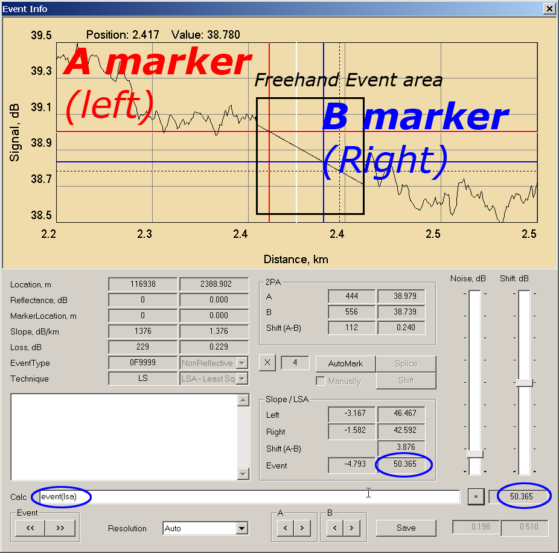
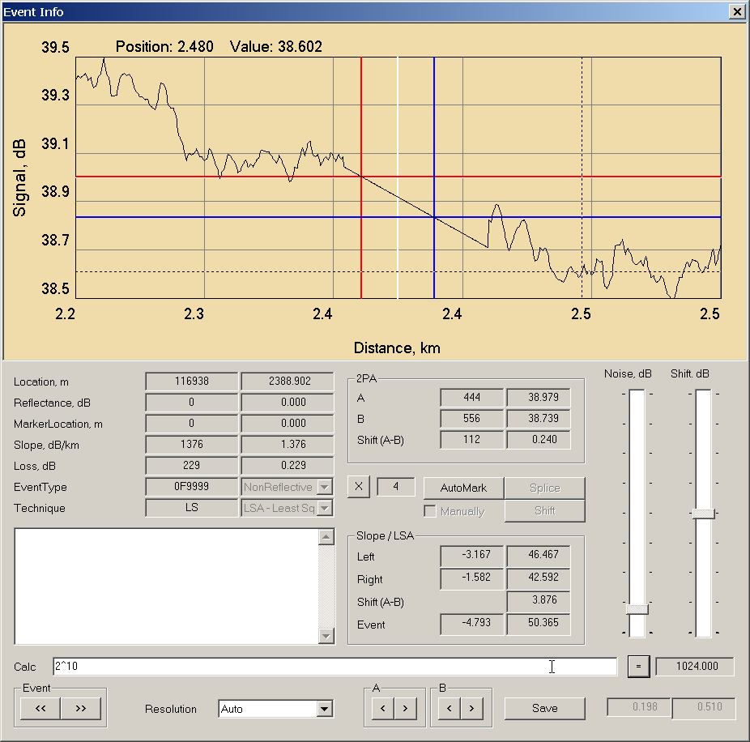
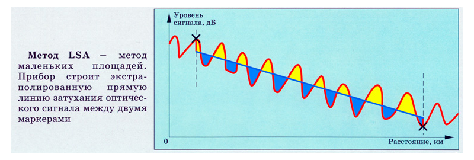

Для удобства расчетов, связанных с параметрами ивентов, вкладка EventInfo
снабжена встроенным однострочным калькулятором, способным выполнять четыре
основных арифметических действия (сложение/умножение/вычитание/деление) и
вычисление нескольких часто используемых функций.
TIP:
Промежуточные результаты вычислений можно сохранять в поле комментария.
В это же поле можно записать и часто используемые формулы. При нажатии
на кнопку 'Save' они будут сохраняться в этом поле до окончания работы
с файлом (или до удаления данного ивента). Если же кроме 'Save' нажать
еще и 'Write', то эта запись будет сохранена в файле вместе с ивентом.
Полный список используемых мнемоник (регистр неважен):
+ Сложение
- Вычитание
* Умножение
/ Деление
\ Деление по модулю (получение остатка)
^ Возведение в произвольную степень
Вычисление математических функций:
sin(x)
cos(x)
atan(x)
abs(x)
sqrt(x)
ln(x)
exp(x)
Специальные функции, для вычисления параметров точек трассы, указанных
положениями маркеров в 2D-редакторе:
left(method) Допустимые значения для метода: 2PA / SLOPE / LSA
right(method) Допустимые значения для метода: 2PA / SLOPE / LSA
shift(method) Допустимые значения для метода: 2PA / LSA
loss(method) Допустимые значения для method: 2PA / LSA
event(method) Допустимые значения для метода: SLOPE / LSA
cross(side,marker) Допустимые значения для side: LEFT / RIGHT,
значения для аргумента marker: A / B.
При изменении положения маркеров и связанных с ними значений для точек
трассы, при нажатии кнопки '=', в вычисляемое выражение автоматически
будут подставлены новые значения соответствующих величин.
Для метода 2PA выбор между функциями shift() и loss() безразличен -
обе вернут то же самое значение. Для метода LSA функция shift()
возращает разность условных уровней сигнала (отнесенную к нулю отсчета),
а функция loss() вернет значение затухания на ивенте (вычисляемое как
дмагональная разность верхнего-левого и нижнего-правого углов прямоугольника,
образованного двумя маркерами A и B).
Примеры:
01.
02.
03.
04.
05.
06.
07.
08.

09.

10.
11.
Определение затухания на ивенте
Расчет затухания на ивенте может быть скорее искусством, чем наукой и, в любом
случае, носит приближенный характер.
На практике используются два метода:
- Метод двух курсоров (2PA) и
- Метод пяти курсоров (LSA).
В методе двух курсоров (2PA), затухание определяется как разность уровней
сигнала в двух точках, выбранных слева и справа от ивента (точки пересечения
маркеров A и B с линией трассы). Точность расчета целиком зависит от верной
(на уровне средней линии) установки маркеров.

В методе пяти курсоров (LSA), затухание определяется как разность уровней двух
прямых, проведенных слева и справа от маркеров A и B в точках пересения ими
соответствующих маркеров. Уравнения этих прямых получаются применением цифровой
фильтрации (сглаживания) к выбранным участкам трассы слева и справа от
помеченного ивента. Очевидно, что эта операция имеет смысл только при
достаточно "ровных" сглаживаемых участках.
2D-редактор Sorry! поддерживает оба метода измерения.
Для удобства расчета, встроенный калькулятор содержит специальные функции
cross() и loss() вычисления значения сигнала в маркированных точках.
cross(side,marker) Допустимые значения для side: Left / Right,
допустимые значения для marker: A / B.
и
loss(method) Допустимые значения для method: 2PA / LSA.
Функция cross() позволяет узнать (и/или использовать в вычислениях) значения в
точках пересечения обоих аппроксимирующих прямых метода LSA с любым из
маркеров A/B.
Функция loss() позволяет узнать (и/или использовать в вычислениях) значения
затухания на ивенте, полученные любым из методов 2PA/LSA.
Следует иметь ввиду, что возвращаемое этой фунцией значение существенно
зависит от "ровности" линии трассы и выбранного диапазона сглаживания (или
выбранной резолюции при автоматическом сглаживании).
На рисунках показано изменение значения затухания в зависимости от резолюции
(диапазона сглаживания).
|